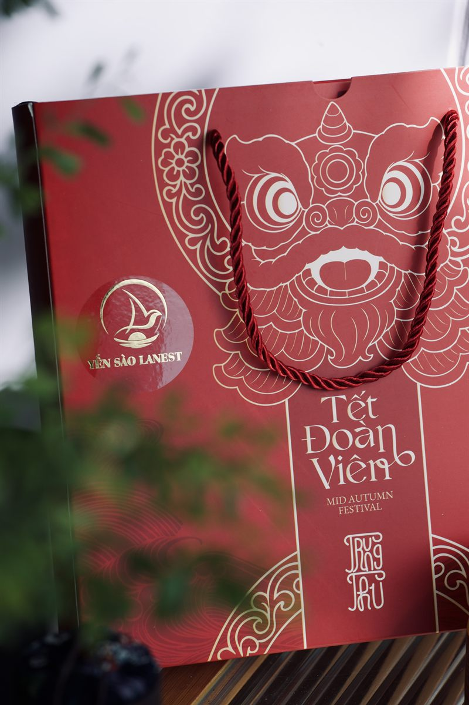

Với yến sào, người mua thường không thấy được bên trong trước khi mở nắp. Thứ họ cầm lên đầu tiên là cái hũ, cái hộp. Vì vậy mẫu mã bao bì yến sào ở Lanest không phải chuyện phụ: cùng với chất lượng, đây là điểm khác biệt mà Lanest tự chọn cho mình. Bài này kể vì sao Lanest đầu tư thiết kế, thường xuyên đổi mẫu, các dòng hũ và hộp hiện có, và điều đó có ý nghĩa gì với người tặng quà lẫn đại lý.
Hộp 1 hũ và hũ yến chưng saffron: nhãn và hộp cùng một tông màu riêng của vị
1. Mẫu mã là điểm khác biệt Lanest tự chọn
Khi tự rà lại năng lực của mình, Lanest gom thành từng nhóm: chất lượng ổn định, nguyên liệu thật, đội thợ tay nghề, chính sách cho đại lý… và một nhóm riêng là mẫu mã sáng tạo, thiết kế đẹp, liên tục cải tiến. Khi nói Lanest khác các nơi bán yến khác ở đâu, công ty nêu hai điều: làm được sản phẩm chất lượng cao, và mẫu mã bắt mắt, thường xuyên thay đổi, đa dạng.
Điều này gắn với chính người sáng lập. Trong một buổi tư vấn với thầy hướng dẫn về mô hình kinh doanh, khi nói tới khả năng nghiên cứu sản phẩm mới, người sáng lập Lanest kể ngắn gọn:
"Sản phẩm yến hũ của em là em tự thiết kế, tự làm ra á thầy."
Tức là cái hũ yến anh chị cầm trên tay không phải mẫu có sẵn đem về dán tên, mà do Lanest tự nghĩ ra từ vị, tên gọi cho tới hình in.
2. Hũ yến: mỗi vị một gương mặt riêng
Cả dòng yến chưng 7g yến tươi và dòng nguyên chất 100% đều đóng trong hũ thủy tinh 70ml, nắp màu vàng kim. Hũ thủy tinh cho người mua nhìn thấy sợi yến bên trong trước khi mở.
Dòng 7g có 14 vị, và mỗi vị được giao một màu riêng: táo đỏ tông đỏ nâu, hạt chia và saffron tông tím, nhân sâm tông xanh lá, long nhãn tông xanh dương, vị trẻ em in hình ngộ nghĩnh cho bé. Vị gừng 7g dùng nhãn nâu, còn hũ gừng nguyên chất 100% dùng nhãn đỏ, để hai sản phẩm cùng tên vị không bị lẫn. Hộp giấy 1 hũ đi kèm in cùng tông với nhãn, nên đặt cạnh nhau thành một cặp.
Trên nhãn, người mua đọc được những thông tin cần thiết: "7g yến tươi" hoặc lượng tổ yến của dòng nguyên chất, thể tích thực 70ml, dòng chữ "Nha Trang Khánh Hòa", số tự công bố sản phẩm và mã vạch đã đăng ký với GS1 Việt Nam. Muốn chọn vị, anh chị xem bài 14 vị yến chưng, chọn vị nào; muốn hiểu khác biệt giữa hai dòng, xem bài yến hũ nguyên chất và yến hũ 7g.
3. Hộp quà: nhiều mẫu, đổi theo mùa
Ngoài hộp 1 hũ, Lanest làm nhiều mẫu hộp quà: hộp đỏ, hộp xanh có cửa sổ nhìn thấy hũ, hộp kem kèm túi ngoài, hộp riêng cho dòng nguyên chất 100%, hộp 6 hũ dành cho trẻ em, và set hộp quà cao cấp cho dịp Tết. Trên trang giới thiệu, Lanest mô tả mẫu hộp quà Tết là sang trọng, tinh tế, "chỉnh chu trong từng ấn phẩm".
Lý do mẫu hộp đổi theo mùa nằm ở nhịp của nghề yến. Người sáng lập Lanest nói về giai đoạn từ tháng 8 tới cuối năm:
"Thời điểm này là thời điểm vàng để bán hàng."
Đó là mùa Trung thu rồi Tết, mùa người ta đi biếu nhiều nhất. Mỗi mùa Lanest làm bao bì riêng cho dịp đó, ví dụ hộp quà Trung thu cao cấp cho đại lý và nhà phân phối. Ngay cả chữ in trên hộp cũng được cập nhật: các mẫu hộp hiện hành ghi "Nha Trang Khánh Hòa".

Túi quà Trung thu 2025 của Lanest: họa tiết đầu lân, chữ "Tết Đoàn Viên", logo Yến Sào Lanest màu vàng
Bảng các set quà đang có và cách chọn theo người nhận, anh chị xem ở bài set quà biếu yến sào.
4. Ý nghĩa với người tặng quà
Ở nhiều nơi, yến là món quà biếu quen thuộc. Người sáng lập Lanest nhận ra điều đó ngay ở nơi mình sống:
"ở cái chỗ của em á thì người ta lại hay đi biếu tặng rồi á thầy."
Với người tặng, hộp quà là lời nói thay mình. Một hộp chỉn chu cho thấy mình đã chọn kỹ. Vì vậy Lanest chú ý cả những thứ đi kèm:
- Túi: hộp đỏ có túi rời, hộp kem kèm túi ngoài, tiện xách đi biếu.
- Vỏ hộp rời 1 hũ và thiệp chúc: để tặng lẻ từng hũ hoặc ghi vài dòng gửi người nhận.
- Phối vị: một hộp có thể trộn nhiều vị, hợp với nhà có người lớn tuổi, trẻ nhỏ.
Câu "Trao sức khỏe – Trao yêu thương" của Lanest nói đúng điều đó: món quà sức khỏe nên trông xứng với tấm lòng người tặng muốn gửi.
5. Ý nghĩa với đại lý trưng bày
Phần lớn yến Lanest đến tay người dùng qua đại lý và nhà phân phối, nhiều nơi bày hàng ở cửa hàng, nhà thuốc. Với họ, mẫu mã là công cụ bán hàng:
- Dễ nhận vị trên kệ: mỗi vị một màu, khách nhìn là biết đâu là táo đỏ, đâu là nhân sâm, người bán đỡ phải giải thích.
- Bán được nhiều kiểu: cùng một hũ yến, đại lý có thể bán lẻ từng hũ, bán hộp 1 hũ, hoặc đóng hộp quà nhiều hũ cho mùa lễ.
- Có chuyện mới để kể: mẫu đổi theo mùa cho đại lý thêm lý do nhắn khách quen khi Trung thu, Tết tới.
- Bộ nhận diện thống nhất: đồng bộ hình ảnh tại các điểm bán là một trong những mục tiêu thương hiệu Lanest đặt ra, để khách thấy cùng một Lanest dù mua ở đâu.
Muốn biết thêm cách hợp tác, anh chị xem bài làm đại lý yến sào Lanest.
6. Đẹp bên ngoài, phải chắc bên trong
Bao bì đẹp chỉ có giá trị khi thứ bên trong xứng đáng. Lanest có đội thợ riêng, mỗi mẻ yến qua 4 chốt kiểm trước khi đóng hộp, công ty có chứng nhận ISO 22000:2018 về an toàn thực phẩm. Câu chuyện phía sau anh chị đọc ở bài nghề nhặt yến và câu chuyện thương hiệu Lanest.
Dù mua ở đâu, khi nhận một hộp yến, anh chị nên xem: nhãn ghi rõ thành phần, số tự công bố, ngày sản xuất và hạn sử dụng; hũ nguyên vẹn, nắp kín, không rò rỉ.
Câu hỏi thường gặp
Mẫu hộp nhận được có giống ảnh trên web không?
Lanest thường xuyên làm mới mẫu hộp, nên mẫu thực tế mỗi mùa có thể khác ảnh. Anh chị gọi hotline hoặc nhắn fanpage để xem mẫu đang có trước khi đặt.
Hũ yến chưng Lanest làm bằng gì, dung tích bao nhiêu?
Hũ thủy tinh, thể tích thực 70ml, dùng cho cả dòng 7g yến tươi và dòng nguyên chất 100%.
Đại lý muốn xem các mẫu hộp quà mùa Tết thì liên hệ thế nào?
Anh chị gọi 0258 6278 627 hoặc nhắn fanpage Yến Sào Lanest để được gửi mẫu đang có và tư vấn chính sách đại lý.